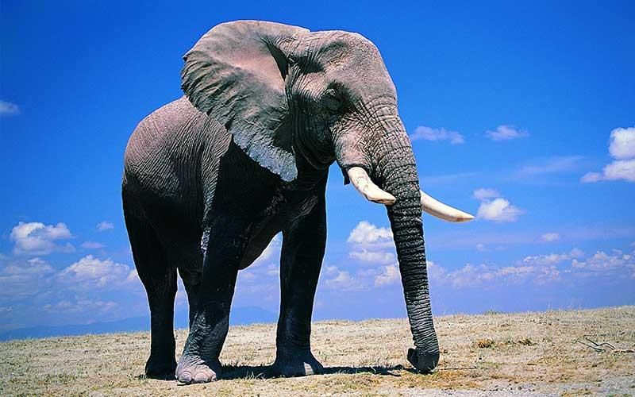

Son animales mamíferos, exclusivamente herbívoros cuya característica principal –además del gran tamaño– es su larga trompa y sus enormes orejas. Se organizan en manadas de unos 20 miembros, miden casi 4 metros los ejemplares más grandes y pueden llegar a pesar más de 6.000 kilos. Suelen vivir alrededor de 70 años y tienen el periodo de gestación más largo de todos los animales: 22 meses. Nada más nacer, las crías ya pesan más de 100 kilos. Claro, no hay que confundir al elefante africano con el asiático.
Debido a su gran tamaño, tienen también un cerebro muy grande por lo cual son animales muy inteligentes a los que se asocian comportamientos como el duelo por una pérdida, la asociación con otros miembros, el uso de herramientas, la adopción, el juego e incluso el autorreconocimiento.
Las orejas de los elefantes actúan como termostato ayudando a soportar el fuerte calor de las zonas donde habitan y su trompa en realidad no es más que una nariz muy desarrollada que también usan como un brazo largo. Los colmillos los usan para buscar comida y agua y son uno de los motivos por los que esta especie se encuentra amenazada, ya que el hombre los utiliza por el valor del marfil.
 ¿Cuál es la diferencia entre los elefantes asiáticos y los africanos?
Existen más de 10 características físicas que diferencian a los elefantes asiáticos de los africanos. Por ejemplo, los elefantes asiáticos son más pequeños que los africanos y sus orejas son rectas en la parte inferior, a comparación de las grandes orejas en forma de abanico de las especies africanas. Solo algunos elefantes machos asiáticos tienen colmillos, mientras que los elefantes africanos, tanto machos como hembras, tienen colmillos. También, es importante señalar que existen dos especies de elefantes en el continente africano: el elefante de la sabana y el elefante del bosque, con una serie de características que los hacen distintos.
El elefante africano del bosque está catalogado como En Peligro Crítico y el elefante de la sabana africana como En Peligro. Esto es importante ya que enfrentan diferentes desafíos de conservación y ocurren en áreas de distribución y hábitats distintos en toda África.
Los elefantes de los bosques africanos habitan la densa selva tropical de África occidental y central, mientras que los elefantes de la sabana africana habitan principalmente en las sabanas boscosas y los pastizales del África subsahariana. También difieren físicamente. Los elefantes de la sabana africana son más grandes y sus colmillos se curvan hacia afuera. El elefante africano del bosque es más pequeño, sus colmillos son más rectos y apuntan hacia abajo y tienen orejas más redondeadas.